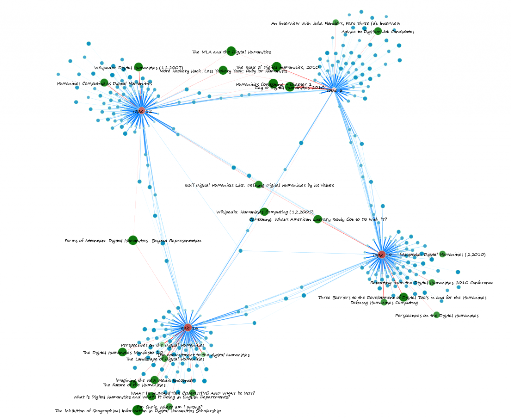
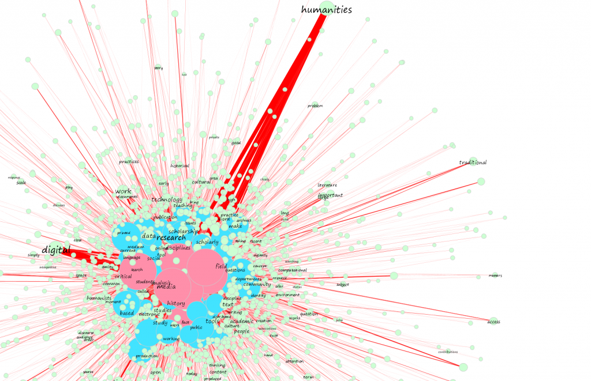

I’m in the middle of a rather large analysis of topic networks created using topic modeling and visualized in Gephi, of course, and simply can’t resist posting a few samples, because they’re absolutely stunning.




Originally published at Digital Humanities Specialist. This edition preserves the original text and historical context.
I’m in the middle of a rather large analysis of topic networks created using topic modeling and visualized in Gephi, of course, and simply can’t resist posting a few samples, because they’re absolutely stunning.

